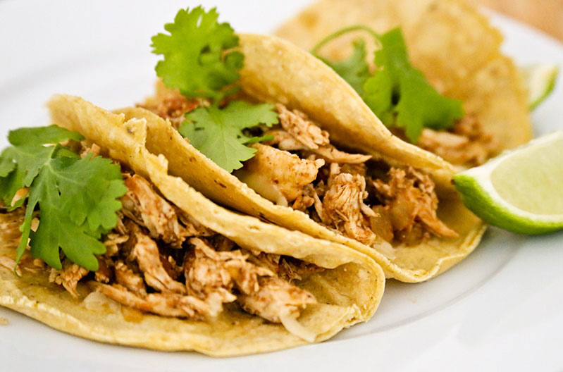

Taco de Pollo
Description
Tacos make for a cheap and practical meal, they are easy to cook and you can fill them with almost anything.
Chicken might strike you as a simple filling, but it's not as commonly found in Mexico as you might think. The key to making great chicken tacos is all in the seasoning, so we recommend that you use this recipe as a guideline but feel free to adjust the quantities of spices and chili to your liking.
Ingredients
- 2 boneless, skinless chicken breasts
- 1 small onion, halved - chop one half, leave the other intac
- 2 cloves garlic, 1 minced, 1 whole
- 1 small tomato, chopped
- 2 tablespoons olive oil
- 1 teaspoon cumin
- ½ teaspoon pepper (or more to taste)
- chili powder to taste
- serrano chili, finely chopped (optional)
- salt to taste
- freshly shredded cheese of your choosing (optional)
- wheat tortillas
- cilantro
- lime wedges
- hot sauce or salsas (optiona
Steps
- Bring a pot of water to a boil and add the chicken, along with the whole onion half, a whole (peeled) clove of garlic and salt to taste.
- Boil the chicken for 45 minutes, or until fully cooked.
- While the chicken is cooking, heat the oil over medium in a non-stick pan and cook the chopped onion until transparent.
- Add the minced garlic and cook until golden.
- Add the spices and toast lightly, being careful not to burn them.
- Add the tomato and serrano chili (if using) and cook until soft.
- If the chicken is still cooking, set the tomato / onion mixture aside.
- When the chicken is cooked through, cool to the touch and then shred.
- Add the chicken and a small ladle of broth to the tomato / onion mixture and simmer, stirring regularly, for 10 - 15 minutes or until excess liquid has been absorbed.
- Meanwhile, heat the tortillas over low on a comal or in a non-stick pan for about a minute per side.
- When the chicken filling is ready, check for seasoning and adjust as necessary.
- Sprinkle cheese over each tortilla, top with chicken filling and garnish with fresh cilantro and lime wedges.
- Serve with your choice of hot sauce or salsas to further dress the tacos to your personal liking.